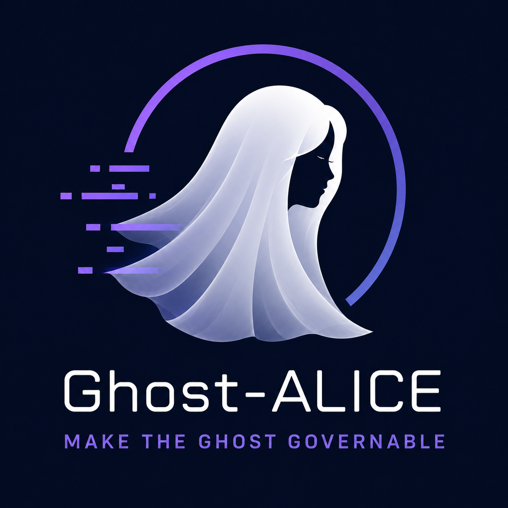

Ghost-ALICE OS

A governance layer for Claude Code and Codex. It instructs the response model to keep your objective and to check each claim against its original evidence, and it records each tool call the response model makes, with the file or command it used, so that you can review it.
git clone https://github.com/AidALL/ghost-alice.git ~/ghost-alice && cd ~/ghost-alice && bash install.shRun this command in macOS, Linux, WSL or Git Bash. The installer installs Core into each of Claude Code and Codex that it finds on this computer. Windows and other install methods
Floor, not ceiling
A response model makes common mistakes: it forgets a constraint set early in a long session, reports success before checking the result, and carries out work beyond the request. You cannot easily see what the response model read and changed. Ghost-ALICE is designed to keep the quality of the response model's work above an acceptable floor. Raising the ceiling that the most skilled user already reaches is not its goal. Read the design principles
What Ghost-ALICE instructs the response model to do
Records how it interpreted your request
For work that needs tools, the response model records in the intent ledger, before its first tool call, how it interpreted your request: the objective, constraints and acceptance criteria. When your words allow more than one reasonable reading and the next action depends on the reading, it asks you before that action.
Design principlesChecks claims against evidence
The response model checks each claim against its original evidence and the whole answer against your objective. When no evidence supports an acceptance criterion, it reports that acceptance criterion as failed or unresolved instead of claiming completion.
Verification and evidenceWrites a boundary contract before implementing
Before it starts implementing, the response model writes a boundary contract. The boundary contract sets what it may read or change, the actions it may take next, the paths, layers and actions it must not use, the acceptance criteria and the stop conditions. While the boundary contract is active, the response model checks each tool call against what it may read or change and the actions it may take next.
Boundary contractShows its intent and key changes
Before a tool call that gathers information for a decision it has not made yet, the response model states the call's intent and reason. Its answer shows the key changes with their content. Independently of the response model, the io-trace hook writes an io-trace record for each tool call.
io-trace ruleHow it works
Ghost-ALICE Core consists of the common contract, the skills and Core code (hooks, the intent ledger and the context gateway). An adapter translates Core for Claude Code or for Codex, and the installer installs the result into that host. Following Core's instructions, the response model carries out the work you authorized and judges what its results mean. Core code stores the records the response model submits (interpreted-as, response route and response review) in the intent ledger and authenticates each record and its link to its source. Ghost-ALICE's design assumes a response model that follows your instructions and the installed common contract. Ghost-ALICE instructs and records, and its Core code blocks no tool call or answer.
Addons
An addon is installed from its own repository or a local path with bash install.sh --addon-source <repository-or-path>. The installer registers the addon's skills and observational hooks with the host, and the hook runner never lets those hooks block the host. Installing an addon does not authorize any work: under the common contract, the response model calls an addon's skills only for work you authorized. The addon's own documentation describes what it adds.
Documentation
To learn the design, read the wiki in order. To install and run Ghost-ALICE, start with the Start here section of the documentation index. English and Korean pages describe the same behavior.
Installation and updates
How to install, update, check and repair Ghost-ALICE, and how to choose the hosts it installs into.
Troubleshooting
How to recover a blocked update of the install source, make the host trust and reload the hooks, review the backups that a pending merge warning reports, and read the intake warning and the doctor (--doctor) lists.
Uninstall
How to remove or restore only the entries that the installer recorded as installed or changed, keeping your files.
Session contracts
For each procedure the response model follows (work selection, intent ledger records, focus, tool checkpoints, response reviews), the condition that starts it and the skill or common-contract rule that owns it.
Platform compatibility
The behavior the installer must keep on each host and shell, and the test or validation that checks each behavior.
Skill catalog
Where the list of installable skills (skill-catalog/skills.json) is and how to update it.